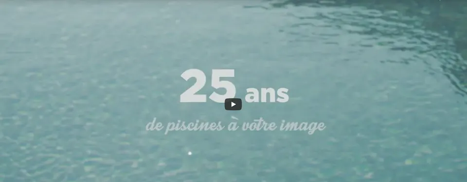

Photo © Piscines Océanes
Photo © Piscines Océanes
Saint-Jean-de-Monts · Vendée
Piscines sur mesure, depuis 1996.
Construction, entretien et SAV. Douze personnes, un showroom à la ZAC du Clousis.
Nos métiers
Un bassin pensé pour votre jardin, puis suivi chaque saison.
Il y a plusieurs métiers autour de la piscine. Chaque projet est différent ; nous réalisons chaque piscine sur mesure, selon vos souhaits et la configuration de votre jardin.

Construction
Des piscines traditionnelles en structure maçonnée, dessinées selon vos envies et la configuration du terrain.

Entretien et SAV
De la mise en service à l'hivernage. Diagnostic et réparation du matériel par nos techniciens.

Bien-être et spa
Une trentaine de modèles, du spa deux places au spa de nage, à découvrir au showroom.

L'entreprise
Douze personnes, un showroom, depuis 1996.
Envie d'une piscine pour un moment de détente, d'amusement et de bien-être : la société Piscines Océanes est implantée à Saint-Jean-de-Monts. Nous sommes constructeurs de piscines traditionnelles depuis 1996. Notre équipe composée de 12 personnes met chaque jour son savoir-faire et son professionnalisme à votre service.
Nous avons à cœur de vous apporter les meilleurs conseils et une qualité de travail pour vous satisfaire au quotidien. N'hésitez pas à venir nous rendre visite dans notre showroom.
- Constructeur depuis 1996
- Équipe 12 personnes
- Showroom ZAC du Clousis
- Adresse 29 rue des Esseppes, Saint-Jean-de-Monts
Avis Google
« Projet complexe avec maçonnerie (escalier rond, 2 banquettes, rehaussement du fond) et renouvellement de la membrane en 2 couleurs et textures. Equipe efficace, toujours ponctuelle, gentille, à l'écoute… »
« Rénovation très réussie : changement de PVC armé création d'une plage et de marches et pose d'un volet roulant… »
Note, nombre d'avis et extraits lus sur la fiche Google publique de Piscines Océanes le 11 novembre 2026. Extraits reproduits tels quels, noms abrégés. Ces avis ne sont pas déclarés dans les données structurées de cette maquette (règle Google sur les avis gérés par l'entreprise elle-même).
Contact
Parlons de votre projet.
29 rue des Esseppes, ZAC du Clousis85160 Saint-Jean-de-Monts
Horaires
- Lundi au samedi9 h – 12 h 30 · 14 h – 18 h 30
- DimancheFermé
Horaires lus sur la page Contact du site actuel, le 11 novembre 2026.
Notre vidéo

Voir la vidéo sur YouTube (aucun lecteur intégré sur cette maquette)